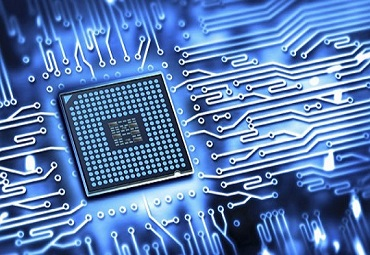

Today, most of the real world activities and fields, right from calculations to space exploration are being computerized as the operations can be much faster and error free with the computer applications. This has resulted in an increased demand for skilled and competent professionals in the computer engineering sector. To cater to this, the Department of Computer Science & Engineering was established at SMVITM in 2010, offering Bachelor of Engineering course with an intake of 60 students per year.
The Department of Computer Science & Engineering is one of the much sought after departments at SMVITM. The Department has well qualified and motivated faculty members who are highly committed to the overall development of the students. Along with the regular curriculum, the Department organizes various guest-lectures/invited talks by eminent faculty from reputed institutions/industry experts to keep students up-to-date about the latest technological developments. In addition to this, there are some eminent academicians appointed as Adjunct Faculty with the Department to supplement teaching, mentoring and guiding the students as well as the faculty members and also to promote research culture in the Department.
The Department has state-of-the-art laboratories equipped with high-end computers and other required peripherals to meet the academic needs of students. The Department has the most sophisticated and state of the art computer labs aimed at giving hands-on training to the students in the most advanced areas in programming and soft ware development. In addition to the existing labs, an internet lab as a central facility is being developed.

The Department of Mechanical Engineering at SMVITM started functioning in the year 2010. The Department offers an under graduate program in mechanical engineering that covers a wide range of topics in the field of mechanical engineering such as thermal and fluid sciences, engineering design, dynamics and control, materials, manufacturing, modelling and simulation as per the VTU curriculum to suit the interests of students and meet the industry requirements.
The student intake capacity of the Department is 120. Teaching and learning activities at the Department are designed in such a way as to stimulate intellectual curiosity, creativity and innovation in students. The Department has a well qualified and experienced team of faculty members who have their specializations in the different branches/areas of mechanical engineering. The highly committed faculty with their innovative ideas guides the students with their projects and industry assignments. The efforts of faculty, well experienced supporting staff, enabling learning environment and availability of modern facilities are reflected in the excellent performance of the students. Efforts are underway to set up a Research & Development centre to initiate the research activities at the Department.
The Department frequently conducts theoretical and practical technical sessions, industrial visits for the benefit of the students and faculty under the ISTE Students’ and Faculty Chapters. These Chapters are actively involved in conducting technical talks and guest lecturers by eminent personalities from the industry and academicians from reputed institutes like IISc., IITs and NITs. The Student Chapter is active in organizing career guidance programs, student talent search programs, seminars, workshops, etc. as co-curricular activities throughout the semesters.

Electrical and Electronics are stands at the forefront of the rapidly expanding horizon of Science and Technology. The Department of Electronics and Communication Engineering in SMVITM was established in the year 2010, initially offering an undergraduate program with an intake of 60 students per year.The intake was increased to 120 in the academic year 2012-13. The department has well-qualified faculty members – highly motivated in teaching and guiding the students in exploring newer avenues of electronics and communication.
Electronics today stands at the forefront of the rapidly expanding horizon of Science and Technology. The Department of Electronics and Communication Engineering in SMVITM was established in the year 2010, initially offering an undergraduate program with an intake of 60 students per year. The intake was increased to 120 in the academic year 2012-13. The department has well-qualified faculty members – highly motivated in teaching and guiding the students in exploring newer avenues of electronics and communication.
The department is intent on creative and technologically advanced skill transfer to the students through teaching, mentoring and counselling. It regularly organizes seminars, symposiums, workshops and invited talks by eminent faculty from reputed institutions and industry experts, to keep the students abreast of the latest technological developments in related fields. The services of some academicians of high repute have been utilized by the department with the objective of supplementing teaching, mentoring and guiding the students as well as faculty members.
The department has its own library comprising of over 100 text books and technical magazines for quick reference. To nurture creative ideas and provide hands-on training to the students, the department has set up an Innovation/Project laboratory with state-of-the-art equipment and latest versions of software tools, in addition to the regular laboratories.